本文章將介紹如何使用 GUI 建立 GCP VM
1. 進入 GCP，網址：https://cloud.google.com/
2. 登入 Google 帳號
3. 點擊畫面右上角控制台進入

4. 建立 VM
點選資訊主頁畫面左上方的三條槓導覽選單查看 GCP 產品和服務列表
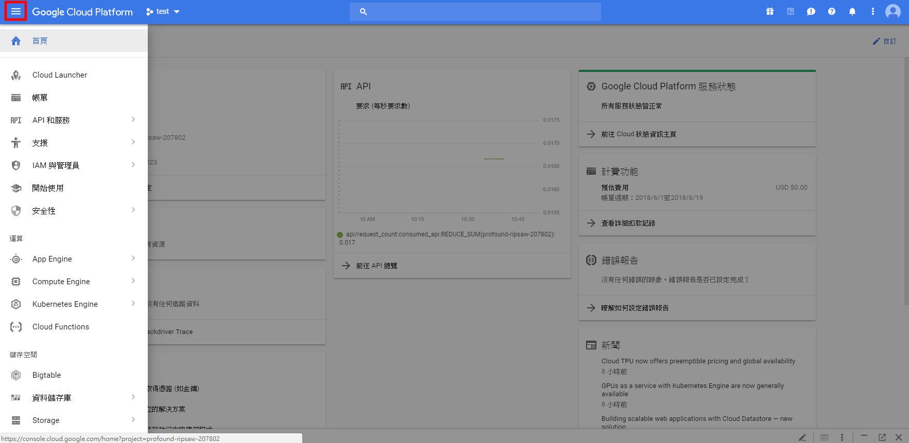
點選 Compute Engine → VM 執行個體 ( 可點選右邊圖釘把自己常用的工具釘選到最上面 )
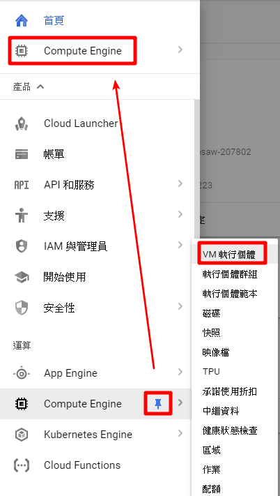
點選建立，建立 VM
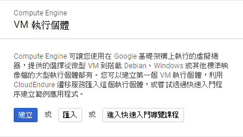
有建立 VM，點選建立執行個體
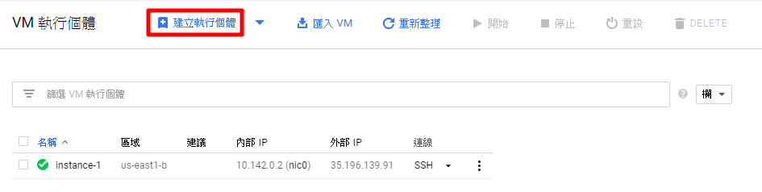
(1) 輸入名稱（ 名稱必須為小寫字母、數字或連字號，且結尾須為小寫字母或數字 ）選擇區域與機器類型
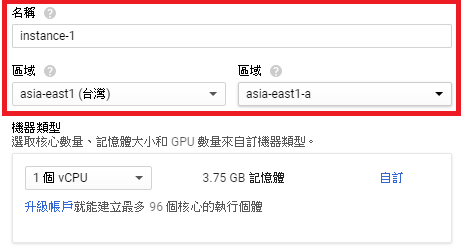
PS：如果想固定區域可以到 Compute Engine → 設定，把區域設定好後每次建立 VM 區域預設就會顯示你設定的區域
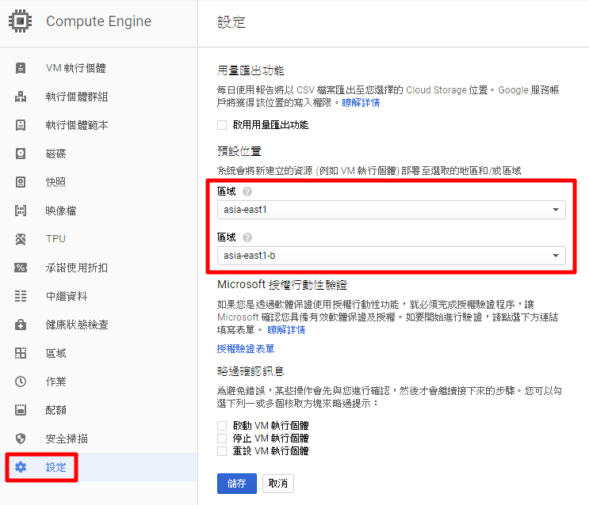
設定 CPU 跟記憶體，GCP 預設有幫你配好看要高記憶體還是高 CPU，可以直接選擇
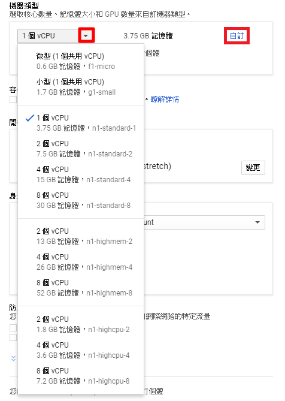
也可以點擊自訂 ( 上圖 ) 調整成自己想要的核心數量、記憶體大小
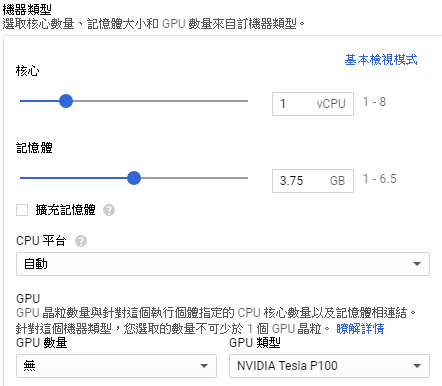
(2) 選擇作業系統跟硬碟類型和容量
點選變更選擇作業系統 image
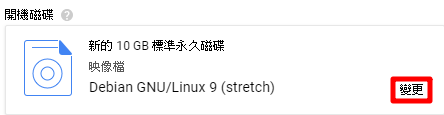
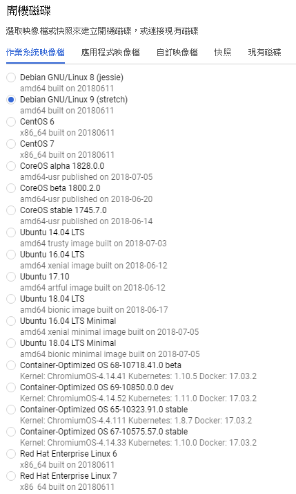
點選 ▼ 選擇硬碟類型，右邊輸入需要的容量
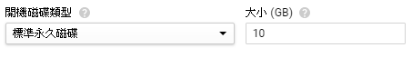
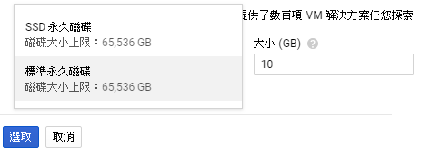
(3) 設定身分及 API 存取權
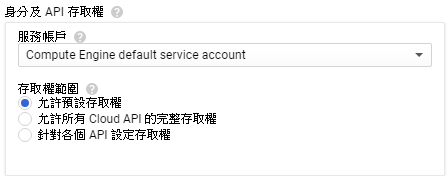
(4) 設定管理、磁碟、網路、SSH 金鑰
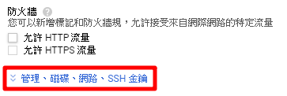
設定管理頁籤內容
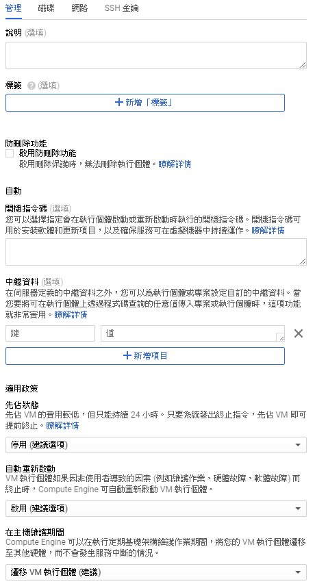
設定磁碟
硬碟部分有做一篇 GCP 硬碟設定介紹，可以到這邊看 文章傳送門
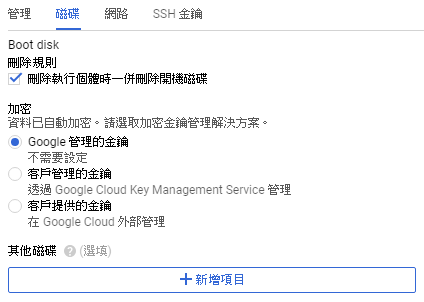
設定網路
網路部分有做一篇 GCP 網路設定介紹，可以到這邊看 文章傳送門
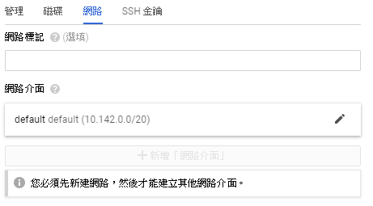
設定 SSH 金鑰
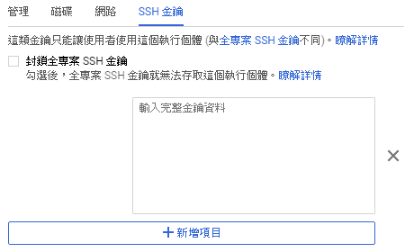
(5) 設定完後右上拉開會顯示每個月多少金額
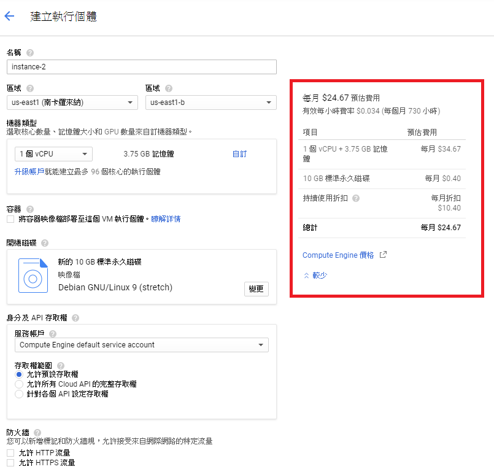
再次確認步驟的內容是否正確，確認無誤後點選建立，建立 VM
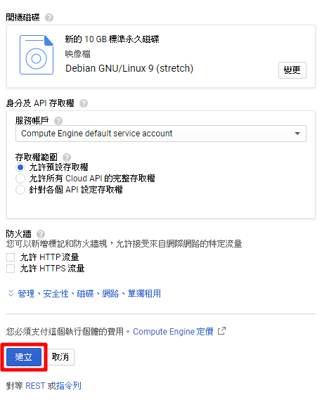
5. 檢查和建立後修改
建立好 VM 後 VM 執行個體可以看到建好的 VM，VM 建好是開啟的狀態，打勾選擇 VM 右邊三點或是右上角選擇要對 VM 做的動作 ( 刪除、停止、重設 )
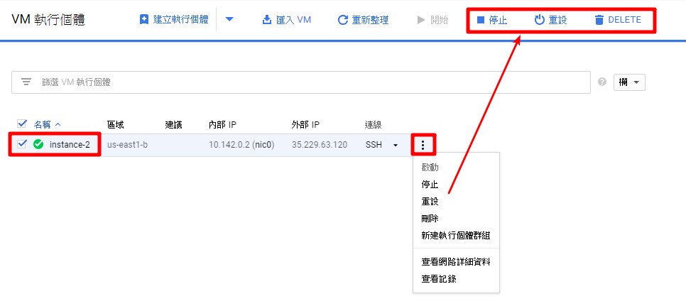
點 VM 名子可以進入查看詳細資料
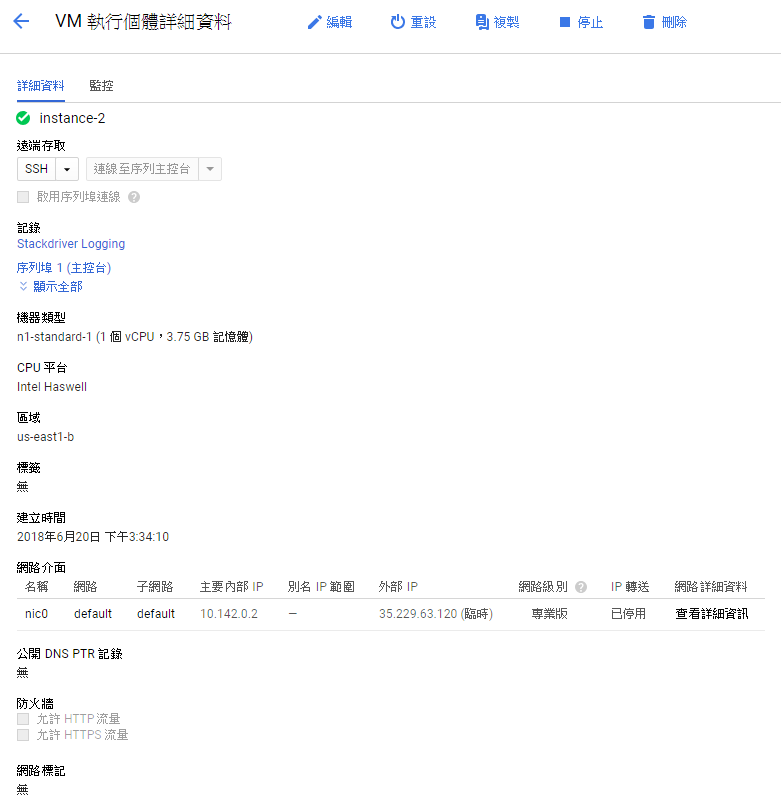
點編輯可以再次對 VM 做編輯，一樣可以做刪除、停止、重設等動作，但是 CPU、記憶體設定要停止 VM 才能更改，images 跟地區無法更改
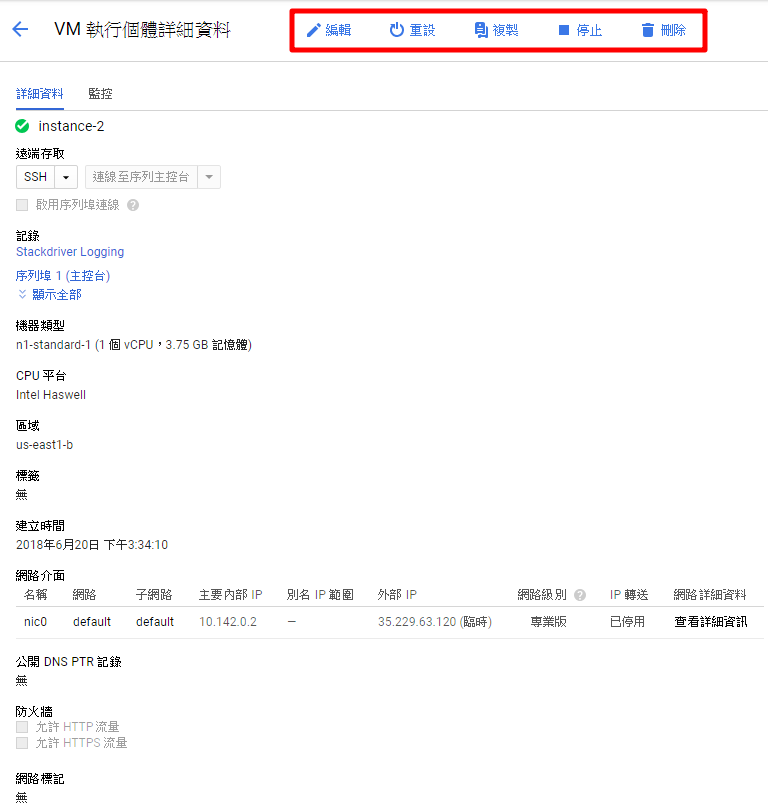